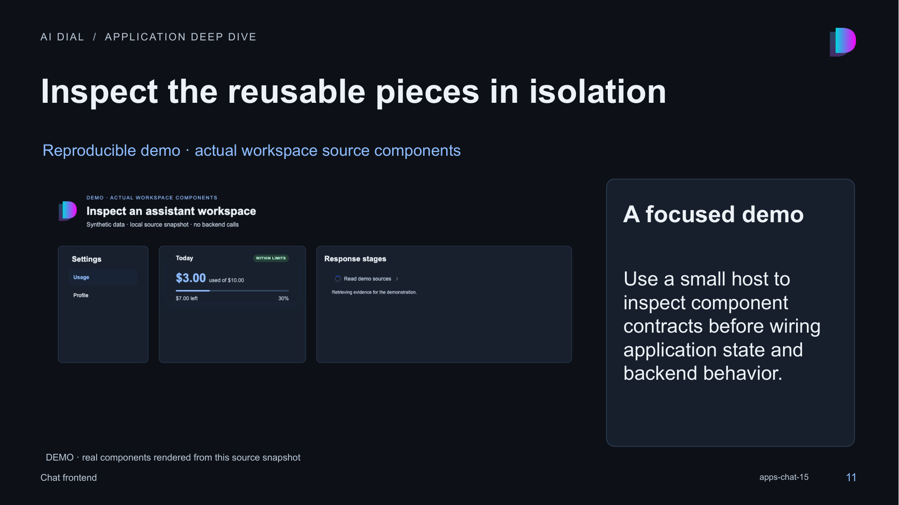

11 · Inspect the reusable pieces in isolation

Speaker notes and sources
This is a real browser screenshot of the standalone demo in demo/main.tsx, captured by src/capture-demo.mjs. It renders SettingsPanel, UsageLimitCard and StagesPanel directly from the recorded source snapshot with local stylesheet dependencies. It is an illustrative host, not a screenshot of a deployed DIAL product. All data is synthetic and no backend request is made. Run the Vite command in examples/README.md, then the capture script. Expected behavior: Usage starts selected; selecting Profile updates the controlled active row. The amount and stage remain demo data. The host explicitly supplies dark-theme color overrides. Desktop and phone captures are retained under assets/.
- libs/settings-panel/src/components/SettingsPanel/SettingsPanel.tsx:1-170
- libs/usage-dashboard/src/components/UsageLimitCard/UsageLimitCard.tsx:1-191
- libs/conversation-stages/src/components/StagesPanel/StagesPanel.tsx:1-229